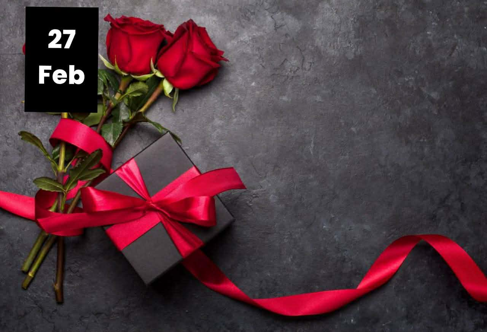
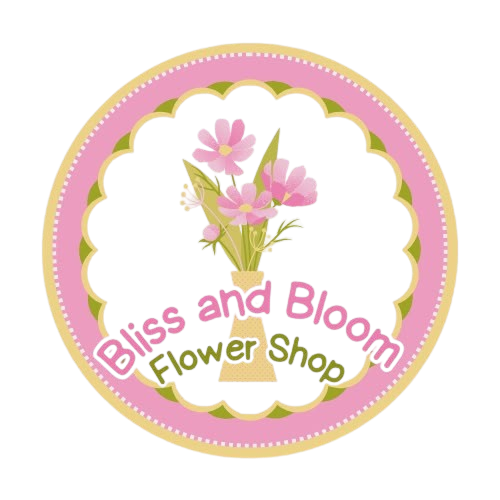

Pairing Flowers and Gifts for Valentines
Valentines is coming along together with gifts! Why do you choose to give gifts only? Hello there! You can pair flowers with gifts for your loved ones.

Bliss & Bloom
Valentines is coming along together with gifts! Why do you choose to give gifts only? Hello there! You can pair flowers with gifts for your loved ones.
Valentines is coming along together with gifts! Why do you choose gifts only? Hello there! You can pair flower with gifts! Valentines is the ultimate day of love. It's the perfect opportunity to show your love and affection for those who matter most like your family, boyfriend or girlfriend, including your husband or wife.
Pair your flowers with gifts to show how much you love them, as gifts symbolizes the surprises and flowers symbolizes the word "I Love You" gifts and flowers lets you express by giving it to them. Pair your flowers with chocolates to put more sweetness to your special gift for them such as Chocolate Boxes or Ferrero will surely make much more exciting. Pair your flowers with balloons symbolizes happiness or balloons with words such as "I Love You" or "Happy Anniversary" or "I love you 3000" or "Best Wishes" or etc. to show how much you feel. Pair your flowers with cake symbolizes care it provides comfort and companionship. It can be your cuddle buddy, when you miss somebody. Pair your flowers with cake and wine to show how happy and how strong your friendship is as wine symbolizes the celebration of happy events and memories. It also creates a strong bond of friendship. Cake symbolizes celebration of occasions such as Birthday or Anniversary or Christmas or New Year. Sometimes you desire cake alone, so just order one as well as that is acceptable. Choosing a cake depends on the individual's taste preference.
We suggest using the KISS Method. Keep it interesting. Short and Sweet (KISS): For a romantic gesture such as anniversary, you might want to spice things up with interesting yet sweet messages. You might also want to include some details on your note such as where you met, the color of her eyes. Just make sure the details are accurate. Below are some examples to help you figured out your composition:
Personalize your message - Make your message meaningful and sincere, so tweak it as you see fit. You may also want to add a little humor or quotes that you think your loved one will appreciate. Customize your message depending on your personality and the personality of the recipient, it will show how much you know the person.
We hope this simple guide would help you come up with a note that would express how much you feel about your loved one. Chocolates also does wonders, so put some on your order.